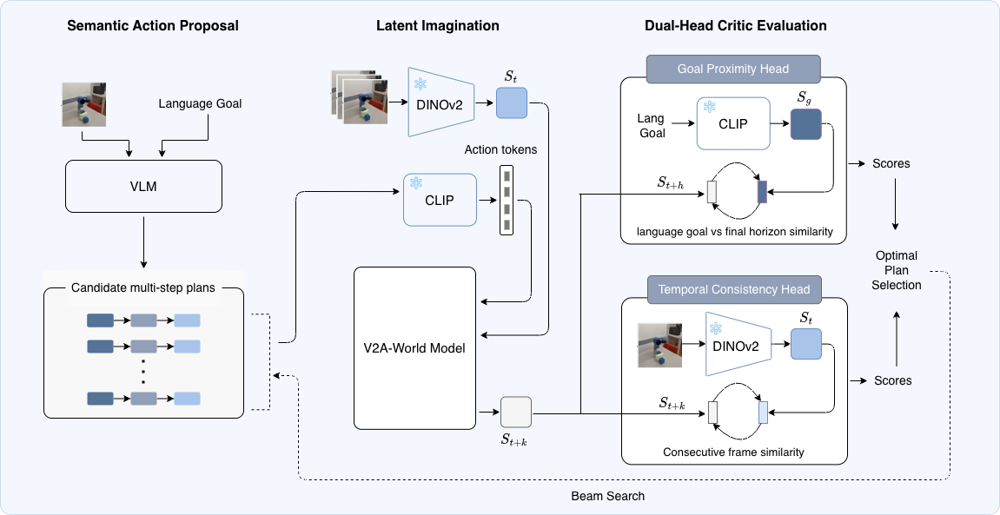
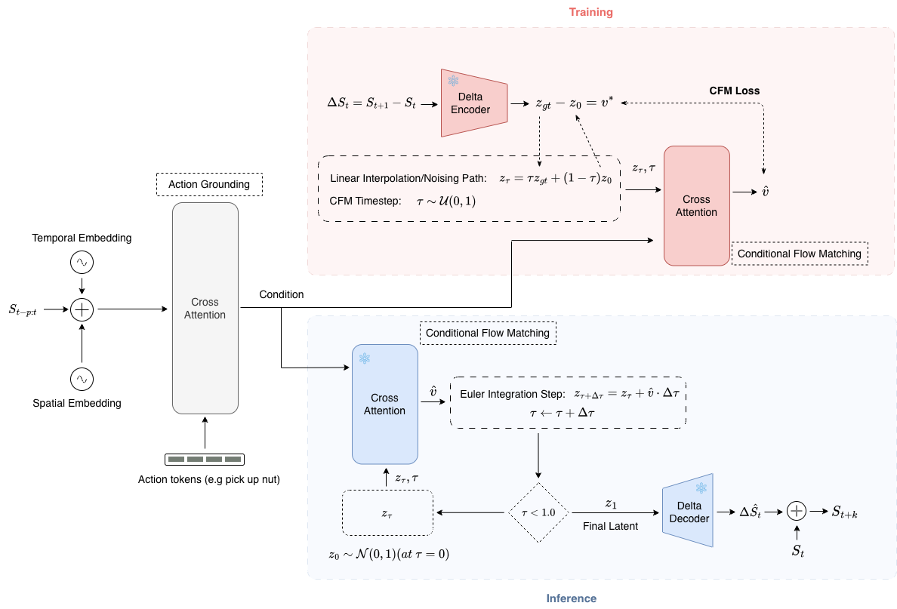
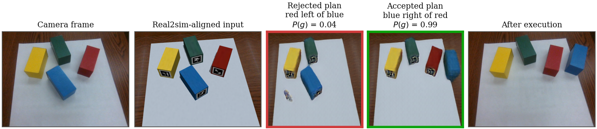
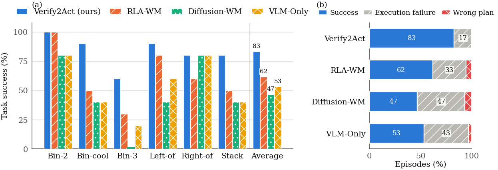

A vision-language model proposes candidate plans, a latent world model imagines each one, and a critic checks the imagined outcome against the goal before the robot moves.
Vision-Language Models (VLMs) can propose multi-step manipulation plans, but they have no grounded model of how a scene will change, and the pixel-level world models that could check those plans are slow and drift over long horizons. We present Verify2Act, a modular verification framework that separates semantic action proposal from latent physical verification. A VLM proposes candidate plans, a latent world model (V2A-WM) imagines each of them in the DINOv2 feature space, and a dual-head critic checks the imagined rollouts for temporal consistency and goal satisfaction before anything is executed. V2A-WM extends recent flow-matching world models with cross-attention action grounding and a causal temporal history window. We deploy the full system on a low-cost robot arm, training the world model and critic only on data generated in a digital twin. Across six language-conditioned tasks, Verify2Act reaches 83.3% task success, compared with 61.7% for a latent world model without our architectural changes, 53.3% for the VLM alone, and 46.7% for a pixel-diffusion world model. It verified every plan it executed and incurred no planning-induced failures: all of its failed episodes were caused by low-level grasp or placement slips. In simulation, Verify2Act obtains the highest five-task chain success on CALVIN among the compared baselines with 30× fewer reflective VLM calls than pixel-diffusion verification, and the highest success on cluttered nut assembly.
Verify2Act treats the VLM only as a source of candidate plans. Each candidate is rolled out by V2A-WM in the frozen DINOv2 latent space, and a dual-head critic scores the imagined rollout: one head checks that consecutive imagined states are temporally consistent, the other scores the final imagined state against the language goal. Plans that fail are sent back to the VLM for re-planning; only an accepted plan reaches the robot.

V2A-WM builds on the flow-matching cores of DINO-WM and RLA-WM with two changes: cross-attention action grounding between DINOv2 patch features and CLIP tokens, which ties language commands to visual object patches, and a causal temporal history window with validity masks, which preserves visual memory across gripper occlusions.

For the robot, the world model and the critic are trained only on data generated in a digital twin of the workspace (20k episodes). At test time, a real2sim step aligns the camera frame with the twin before the plan is imagined.

A Yahboom DOFBOT with an arm-mounted camera and four colored blocks. Robot footage is sped up 4× or 6×, as labeled in each clip.
Goal: “Clear all cool-colored blocks into the bin and leave the yellow block.” All three proposed candidates also bin the red block and are rejected by the goal head; the re-planned candidate is accepted.
The verified plan bins green and blue and leaves red and yellow on the table.
The same task without a world model or critic: the first proposed plan is executed and the red block goes into the bin.
Goal: “Put the red block to the left of the blue block.” Plan accepted with goal score 0.99.
Goal: “Stack the blue block on top of the yellow block.” Plan accepted with goal score 1.00.
The plan is correct and verified, but the low-level skill fails to complete the stack. All of Verify2Act's failed episodes were of this kind.
The bin-clearing task on two other layouts, unedited apart from the speed-up.
Green and blue are binned; red and yellow stay on the table.
Green and blue are binned; red and yellow stay on the table.
These demonstrations were filmed without the letter-size sheet used in the paper's evaluation. The planning panels were computed from the recorded camera frames and the plans the VLM proposed during the filmed runs.
All methods share the same VLM (GPT-4o), prompts and low-level skills, and differ only in how a proposed plan is verified.
| Method | Bin-2 | Bin-cool | Bin-3 | Left-of | Right-of | Stack | Avg. |
|---|---|---|---|---|---|---|---|
| VLM-Only | 80 | 40 | 20 | 60 | 80 | 40 | 53.3 |
| Diffusion-WM | 80 | 40 | 0 | 40 | 80 | 40 | 46.7 |
| RLA-WM | 100 | 50 | 30 | 80 | 60 | 50 | 61.7 |
| Verify2Act (Ours) | 100 | 90 | 60 | 90 | 80 | 80 | 83.3 |

| VLM-Only | Diffusion-WM | RLA-WM | Verify2Act | |
|---|---|---|---|---|
| Plan correct (%) | 93.3 | 93.3 | 95.0 | 100 |
| Planning failures (%) | 6.7 | 6.7 | 5.0 | 0.0 |
| Execution failures (%) | 43.3 | 46.7 | 33.3 | 16.7 |
| Step success (%) | 69.2 | 61.5 | 73.0 | 82.5 |
| Verified plans (%) | — | — | 61.8 | 100 |
| Top-1, real2sim-aligned (%) | — | — | 71.4 | 97.6 |
| Top-1, camera frame (%) | — | — | 23.8 | 71.4 |
| VLM calls / episode | 1.00 | 2.00 | 1.84 | 1.13 |
| Planning time / call (s) | 3.4 | 30.0 | 28.4 | 24.0 |
| Episode time (s) | 81 | 107 | 126 | 109 |
| Method | SR1 | SR2 | SR3 | SR4 | SR5 | Avg. Len. | Refl. Calls |
|---|---|---|---|---|---|---|---|
| MCIL | 37.3 | 2.7 | 0.4 | 0.0 | 0.0 | 0.38 | — |
| HULC | 88.9 | 73.3 | 58.7 | 47.5 | 38.3 | 3.06 | — |
| GR-1 | 94.9 | 89.6 | 84.4 | 78.9 | 73.1 | 4.21 | — |
| VLM-Only (GPT-4o) | 100.0 | 96.0 | 91.0 | 83.0 | 70.0 | 4.40 | 0 |
| DINO-WM | 97.0 | 93.0 | 87.0 | 76.0 | 66.0 | 4.19 | 0 |
| RLA-WM | 100.0 | 95.0 | 90.0 | 81.0 | 69.0 | 4.35 | 16 |
| Diffusion-WM | 100.0 | 96.0 | 91.0 | 79.0 | 66.0 | 4.32 | 444 |
| V2A-WM (AdaLN) | 100.0 | 96.0 | 89.0 | 81.0 | 71.0 | 4.37 | 27 |
| V2A-WM (Non-Causal) | 99.0 | 94.0 | 90.0 | 84.0 | 73.0 | 4.40 | 33 |
| Verify2Act (Ours) | 100.0 | 98.0 | 88.0 | 82.0 | 75.0 | 4.43 | 15 |
| Method | SR | NCR | Prec. | Rej. | Repl. |
|---|---|---|---|---|---|
| VLM-Only (GPT-4o) | 17.0 | 37.9 | — | — | 0.0 |
| DINO-WM | 20.0 | 36.9 | 46.6 | 9.2 | 1.5 |
| RLA-WM | 43.0 | 67.6 | 76.2 | 69.8 | 17.6 |
| Diffusion-WM | 55.0 | 69.1 | 78.9 | 51.8 | 9.0 |
| V2A-WM (AdaLN) | 30.0 | 47.3 | 55.1 | 55.0 | 7.1 |
| V2A-WM (Non-Causal) | 31.0 | 51.1 | 58.1 | 49.1 | 5.4 |
| Verify2Act (Ours) | 58.0 | 70.3 | 61.8 | 49.0 | 10.3 |
@misc{eze2026verify2act,
title = {Verify2Act: Critic-Guided Latent World Models for Verifying
Language-Conditioned Manipulation Plans},
author = {Eze, Chrisantus and Crick, Christopher},
year = {2026},
note = {Under review}
}